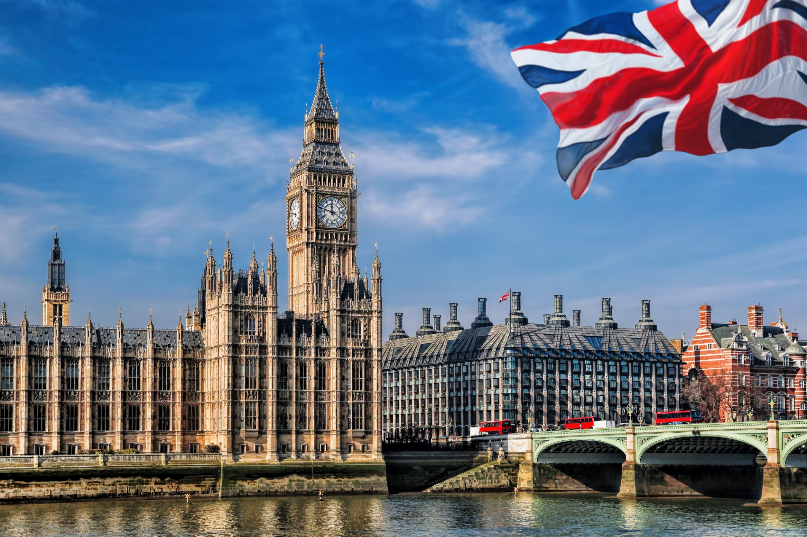
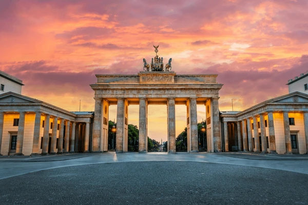
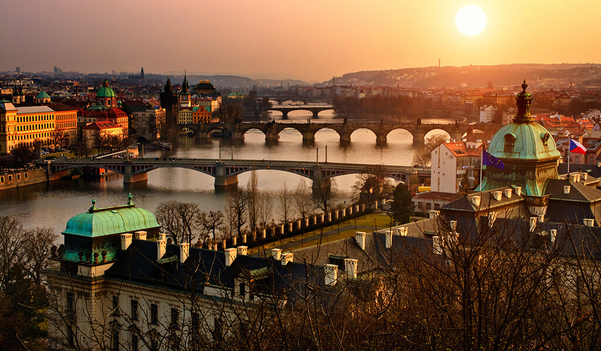
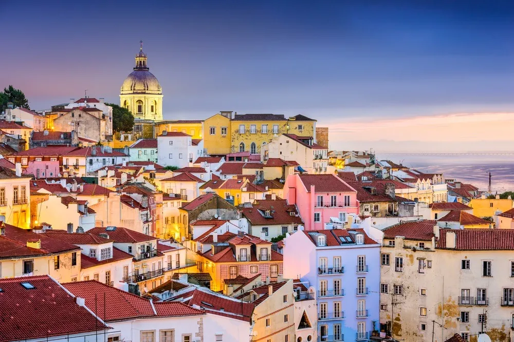
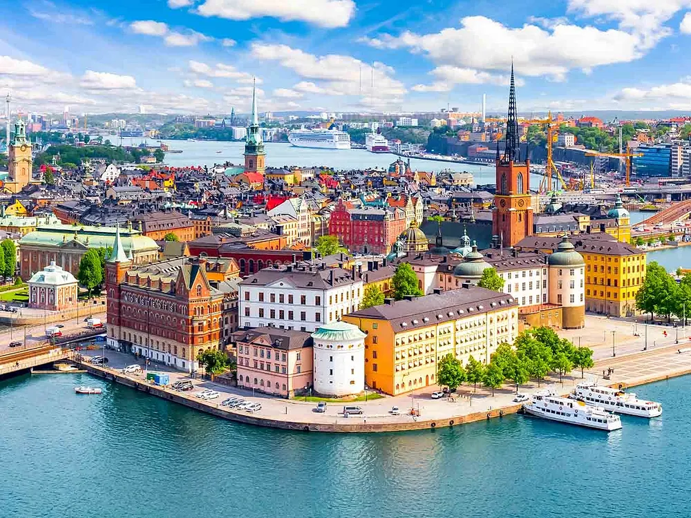
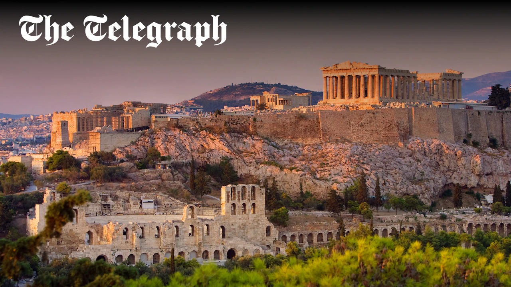
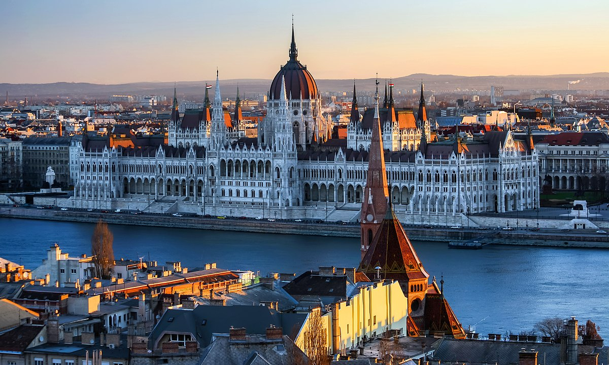
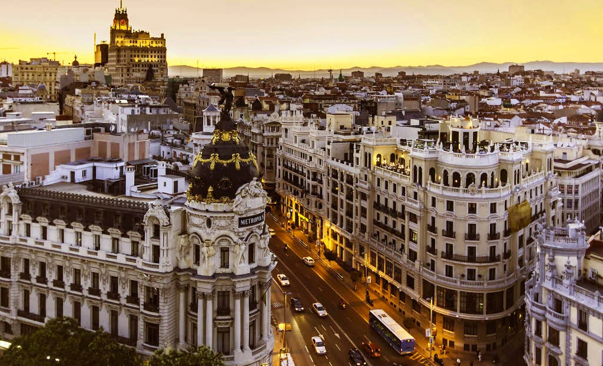

Recomandări Personalizate
Descoperă capitalele europene perfecte pentru stilul tău de călătorie
Capitale perfecte pentru călătorii independenți care vor să descopere noi culturi, să cunoască oameni noi și să exploreze în ritmul lor.
 Franța
Franța
Paris
2.2 milioane
Franceză
Turnul Eiffel

Regatul UnitLondra
9.0 milioane
Engleză
Big Ben

GermaniaBerlin
3.7 milioane
Germană
Poarta Brandenburg

CehiaPraga
1.3 milioane
Cehă
Castelul Praga

PortugaliaLisabona
505 mii
Portugheză
Turnul Belém

SuediaStockholm
975 mii
Suedeză
Gamla Stan
 Olanda
Olanda
Amsterdam
872 mii
Olandeză
Canalele
 Austria
Austria
Viena
1.9 milioane
Germană
Palatul Schönbrunn

GreciaAtena
3.1 milioane
Greacă
Acropole
 Italia
Italia
Roma
2.8 milioane
Italiană
Colosseumul

UngariaBudapesta
1.7 milioane
Maghiară
Parlamentul

SpaniaMadrid
3.3 milioane
Spaniolă
Palatul Regal
Madrid
3.3 milioane
Spaniolă
Palatul Regal
Italia
Roma
2.8 milioane
Italiană
Colosseumul
Budapesta
1.7 milioane
Maghiară
Parlamentul
Londra
9.0 milioane
Engleză
Big Ben
Austria
Viena
1.9 milioane
Germană
Palatul Schönbrunn
Olanda
Amsterdam
872 mii
Olandeză
Canalele